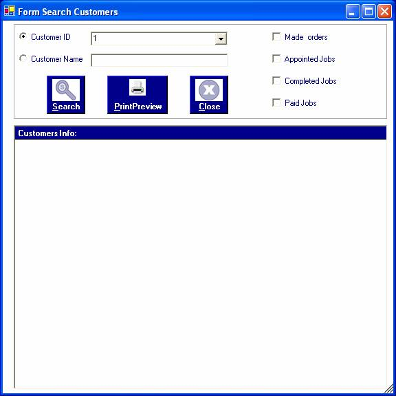
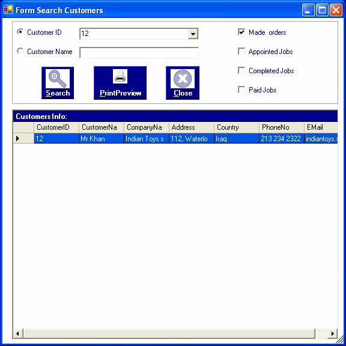
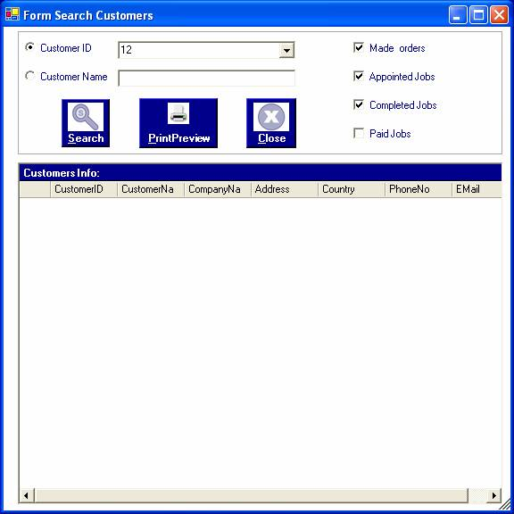
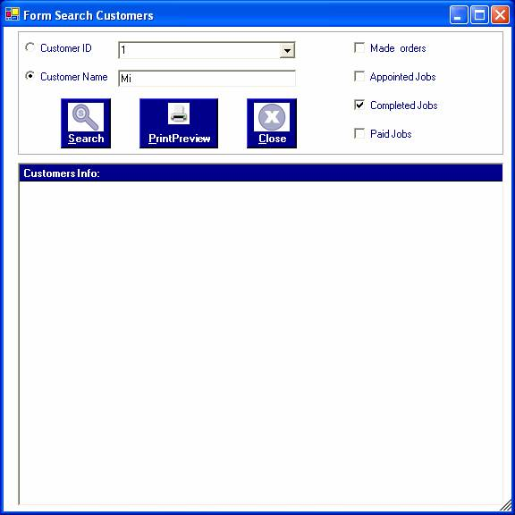
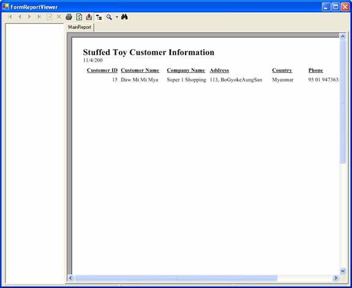

How to process searching customers with their conditons of jobs
After you successfully log in to the system as a manager or an administrator, you can access customer information by choosing the required options in the form.
To open the form, click on the Search Menu and choose the "Customer Info " . The "Customer Info " form will be appeared.

In this form, according to the Made orders, appointed jobs, completed jobs and paid jobs options, the customer information can be searched by choosing either customerID or customerName.
If you know only the customer ID, you should choose "Customer ID" Radio button and choose the customer ID in the combobox. When you have chosen customer ID, choose any Made orders, appointed jobs, completed jobs and paid jobs option on the right to know the condition of orders concerned with the required customers. After choosing the options, click "Search" button or Alt+S.
 In this browse, Made orders means that this customer ID is making order for toys.
In this browse, CustomerID 12 is both making orders and confirmed their jobs with cost and design.
 In this browse, the jobs ordered by CustomerID 12 is not accomplished. Therefore, there is no data to show. Likewise, if that job is not completed, it cannot be in the paid jobs. If you choose "Paid Jobs", there will also be no data in the grid.
If only customer name is known, it is possible to search the customers and their jobs by entering the customer name in the customer name combobox.

After choosing the required conditions, click "Search" button or Alt+S.
To view as a report format, click "Print Preview" button or Alt+P.

To close the form, click "Close" button or Alt+C.